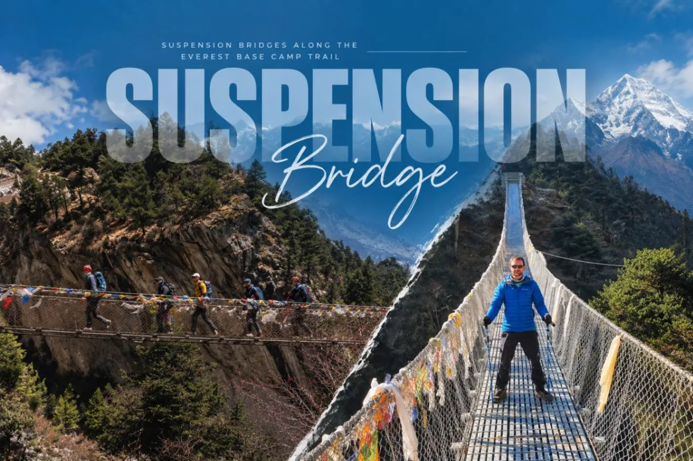
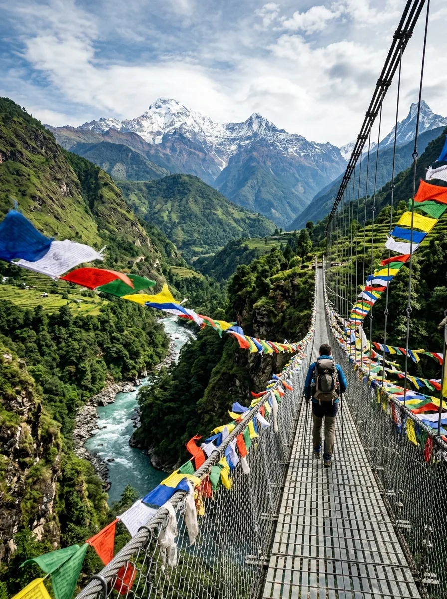
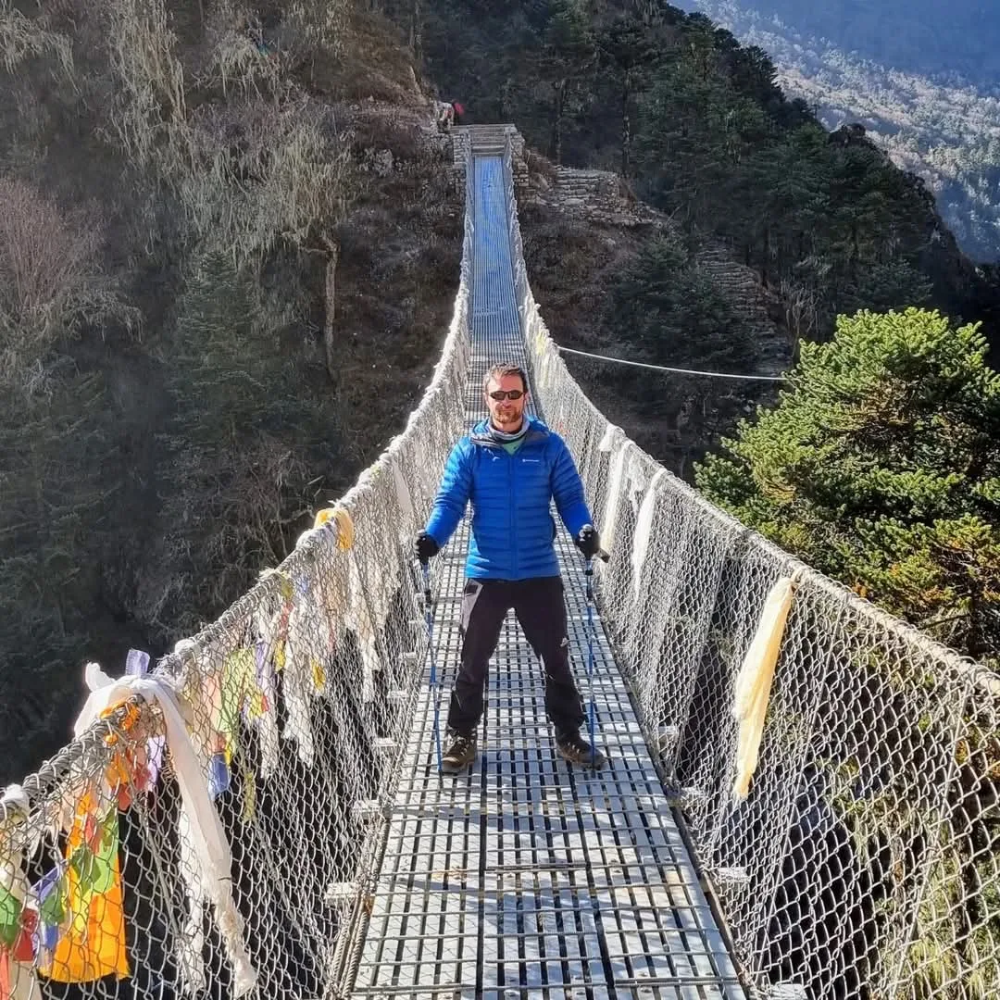

1. The Steel Lifelines of the Khumbu: Engineering Marvels of the Himalayas

Before modern suspension bridges were constructed in the late 20th century, traveling through the Solukhumbu was a treacherous, often deadly undertaking. Local Sherpa communities and early mountaineering expeditions had to rely on crude, temporary wooden cantilever bridges and slippery log spans lashed together with hemp ropes and stones.
Every summer monsoon, violent glacial meltwater floods would smash these wooden crossings to splinters, completely cutting off villages like Namche Bazaar and Khumjung from lower trading markets for months at a time.
Beginning in the 1960s and 1970s, pioneering Swiss engineers from the Swiss Association for Technical Assistance (SATA / Helvetas) partnered with the Nepalese government and local Sherpas to design specialized long-span pedestrian suspension bridges. Engineered to withstand high-velocity canyon winds, freeze-thaw soil cycles, and the massive dynamic loads of packed yak herds, these bridges revolutionized Himalayan transportation and made commercial trekking to Everest Base Camp possible.
2. Master Inventory: Key Suspension Bridges Between Lukla and Tengboche
The vast majority of major suspension bridges are concentrated in the lower Dudh Koshi river valley between Lukla (2,846m) and Tengboche (3,867m). Above Pangboche, the trail leaves the river gorge and climbs onto high glacial moraines where streams are crossed via smaller stone culverts.
| Bridge Name / Landmark | River Spanned | Nearest Village | Altitude (m / ft) | Height Above River | Day Crossed |
|---|---|---|---|---|---|
| Chaurikharka / Ghat Bridge | Dudh Koshi Tributary | Ghat | 2,590m / 8,497ft | 15 meters (49 ft) | Day 01 & Day 11 |
| Phakding Suspension Bridge | Dudh Koshi River | Phakding | 2,610m / 8,563ft | 25 meters (82 ft) | Day 01 & Day 11 |
| Bengkar / Toktok Bridge | Dudh Koshi River | Bengkar | 2,710m / 8,891ft | 35 meters (115 ft) | Day 02 & Day 11 |
| Jorsalle National Park Bridge | Dudh Koshi River | Jorsalle Checkpoint | 2,810m / 9,219ft | 40 meters (131 ft) | Day 02 & Day 11 |
| Hillary Suspension Bridge | Bhote Koshi / Dudh Koshi Confluence | Foot of Namche Hill | 3,050m / 10,006ft | 135 meters (443 ft) | Day 02 & Day 11 |
| Phunki Thenga Bridge | Imja Khola River | Phunki Thenga | 3,250m / 10,662ft | 30 meters (98 ft) | Day 04 & Day 10 |
3. Bridge #1: The Chaurikharka & Ghat Suspension Bridges
On Day 1, as you depart the stone gateway of Lukla and descend into the fertile pine valley of Chaurikharka, you encounter your first Himalayan suspension bridges.
These lower bridges cross cascading glacial mountain streams rushing down from the Karyolung and Kusum Kanguru peaks. They are relatively low to the water (15 to 20 meters), making them the perfect gentle introduction for trekkers who might feel mild nervousness about heights.
As you step onto the steel grating, notice the massive carved Buddhist mani stone walls on either side of the trail. The soft roar of mountain water below, combined with the gentle vibration of the cables underfoot, instantly confirms that your Himalayan journey has begun.
4. Bridge #2: The Phakding Village Suspension Bridge

Crossing into the bustling village of Phakding (2,610m) requires traversing a picturesque, medium-span suspension bridge spanning the main channel of the Dudh Koshi ('Milk River').
The water beneath this bridge is a striking, luminous milky-blue color, caused by ultra-fine glacial silt (rock flour) ground down by massive glaciers high up on Mount Everest and Lhotse.
This bridge is frequently used by dzokyo caravans carrying supplies to local lodges. Stand at the bridge entrance and observe how smoothly local Sherpas and porters glide across the steel deck with heavy baskets, balanced perfectly in rhythm with the gentle sway of the bridge.
5. Bridges #3 & #4: The Bengkar, Toktok & Jorsalle Crossings
Day 2 from Phakding to Namche Bazaar is the most bridge-intensive day of the entire trek. Within a three-hour span, the trail crisscrosses the river gorge multiple times as the canyon narrows into vertical granite cliffs.
- Bengkar Suspension Bridge: Perched near dramatic multi-tiered waterfalls tumbling down from Thamserku (6,608m). Here, cool spray fills the air, creating sparkling rainbows across the prayer flags on sunny mornings.
- Toktok Bridge: Traverses a narrow slot canyon where the river thunders through massive polished boulders the size of suburban houses.
- Jorsalle Bridge: Located just past the official Sagarmatha National Park entry gate and military checkpoint. The bridge spans a wide gravel flat before the trail plunges into dense blue pine forests.
6. Bridge #5: The Legendary Hillary Suspension Bridge (The High Double Bridge)

The undisputed superstar of the entire trail is the world-famous Hillary Suspension Bridge, named in honor of Sir Edmund Hillary.
Located at the dramatic confluence where the Bhote Koshi ('Tibetan River') merges into the Dudh Koshi, this awe-inspiring structure hangs an astonishing 135 meters (443 feet) above the canyon floor.
The Double Bridge Optical Perspective: Looking at the gorge, you will notice two parallel bridges hanging one above the other. The lower bridge was the original crossing built decades ago; however, strong canyon wind vortexes and seasonal rockfall made it difficult to maintain. The higher, modern bridge was engineered directly above it, spanning an incredible 140 meters between sheer granite bluffs.
Crossing the Hillary Bridge is a true rite of passage. Midday winds send ripples through thousands of colorful prayer flags, and looking down between your trekking boots into the foaming white river far below produces an exhilarating surge of pure adrenaline. Once across, you immediately begin the infamous 600-meter vertical climb up the pine-scented switchbacks to Namche Bazaar.
7. Bridge #6: The Phunki Thenga Bridge (The Sacred Imja Khola)

On Day 4, after walking the scenic high-balcony trail from Namche Bazaar, the route drops steeply through birch and juniper woods to the valley floor at Phunki Thenga (3,250m).
Here you cross the Imja Khola, a furious torrent draining the high glaciers of Lhotse, Nuptse, and Ama Dablam. Beside the bridge sit several traditional stone prayer-wheel houses, where the rushing river turns water wheels that spin giant brass prayer cylinders 24 hours a day, continuously sending mantras into the mountain air.
This is the final major suspension bridge on your ascent toward Base Camp. After crossing it, you stop for lunch at the riverside teahouse before beginning the steep, 2-hour, 600-meter climb through rhododendron forests up to Tengboche Monastery.
8. Engineering, Safety & Maintenance: How Himalayan Bridges Are Built
How safe are these gossamer-thin steel spans hanging over lethal chasms? The answer is: extraordinarily safe.
Anchor & Cable Engineering
- Bedrock Anchorage: Main load-bearing cables (heavy galvanized steel wire ropes) are anchored up to 10 meters deep into solid granite bedrock using reinforced concrete deadman anchor blocks.
- Load Ratings: Modern bridges like the Hillary Bridge are engineered with a safety factor of 3.0 to 4.0, rated to hold dynamic loads exceeding 15 to 20 metric tons simultaneously.
- Wind Guy-Cables: Beneath the walking deck, lateral wind-guy cables (stabilizer wires) are anchored to the canyon cliffs on either side to prevent dangerous aerodynamic twisting and harmonic oscillation in high winds.
Deck Construction & Maintenance
- Steel Mesh Grating: The walking deck consists of galvanized steel non-skid mesh panels that allow snow, rain, and mud to fall through, preventing ice accumulation.
- Full-Height Enclosures: Side fencing rises 1.2 to 1.4 meters high with dense diamond wire mesh, making it physically impossible for a trekker or pack animal to fall off the edge.
- Annual Inspections: The Sagarmatha National Park Buffer Zone Committee conducts mandatory bi-annual torque inspections on all cable clamps and turnbuckles.
9. Yak & Mule Caravan Etiquette on Suspension Bridges
While the bridges are structurally rated to carry loaded yak herds, sharing a narrow 1.2-meter-wide suspension bridge with a panicked 500kg yak is an absolute nightmare scenario.
CRITICAL BRIDGE SAFETY: The Single-Caravan Rule
NEVER enter a suspension bridge if you see or hear an approaching yak, dzokyo, or mule caravan on the bridge or entering from the opposite end.
Pack animals move in tight packs. When they step onto the bridge, the cables swing rhythmically, making animals nervous. If a trekker gets trapped halfway across, pack boxes projecting from the animals' flanks can crush you against the wire fencing or cause animals to stampede.
What to do: Stop at least 10 paces back from the bridge gate. Step up onto the high bank, let the drovers and their entire herd cross and exit the bridge completely, and only then begin your crossing.
10. Overcoming Vertigo & Bridge Acrophobia: Sherpa Mental Hacks
If you suffer from acrophobia (fear of heights), standing before the Hillary Bridge with its 135-meter sheer drop can cause genuine panic, sweaty palms, and frozen legs.
Our senior Sherpa guides have successfully escorted hundreds of acrophobic travelers across every bridge in the Himalayas using these proven behavioral techniques:
- 1. Fix Your Eyes on the Opposite Tower: Never look down through the metal grating at the churning water. Pick a visual target at eye level on the far end of the bridge (a prayer flag pole or stone cairn) and keep your gaze locked onto it.
- 2. Walk in the Exact Center: The steel grating is most stable along the center axis. Walk in a steady, rhythmic stride. Don't shuffle your feet; lift your knees cleanly.
- 3. Use the Handrails: Keep one or both hands lightly gliding along the thick steel handrail cables. The tactile connection gives your vestibular system immediate balance feedback.
- 4. Use Trekking Poles as Stabilizers: Plant your rubber-tipped trekking poles rhythmically as you walk to absorb sway.
- 5. Hike with a Guide: If you feel overwhelmed, your Sherpa guide will walk directly in front of you, shielding your view of the drop and matching your pace step-by-step.
11. The Spiritual Significance: Why Prayer Flags Are Strung Across Bridges
Every suspension bridge in the Khumbu is draped in dense curtains of vibrant, wind-whipped Buddhist prayer flags (Lungta, or 'Wind Horse').
This is not mere decoration. In Tibetan Buddhist cosmology, bridges are considered spiritually potent liminal zones where traveler safety is vulnerable to mountain spirits and water demons.
Prayer flags are strung across river gorges in a sacred sequence of five colors, representing the cosmic elements:
- Blue: Sky and space
- White: Air and wind
- Red: Fire
- Green: Water
- Yellow: Earth
Because mountain gorges act as natural wind tunnels, wind constantly whips through the flags. Buddhists believe that each flutter of the flag carries the printed mantras (such as Om Mani Padme Hum) into the wind and water, blessing all beings downstream and protecting travelers crossing the bridge.
12. Photography Tips for Capturing Epic Bridge Shots
Everest suspension bridges are among the most photogenic subjects in travel photography. Here is how to capture National Geographic-quality images:
Composition & Framing
- Leading Lines: Stand at the stone bridge tower and crouch low. Use the sweeping steel cables and parallel deck lines to lead the viewer's eye across the gorge toward a distant mountain peak.
- The Double Bridge Perspective: From the trail switchback above the Hillary Bridge, shoot with a wide-angle lens (16mm–24mm) to capture both the high modern bridge and the low historical bridge in a single vertical frame.
Motion & Action
- Prayer Flag Flutter: Use a fast shutter speed (1/500s or faster) to freeze the sharp, vibrant detail of wind-blown prayer flags against deep blue mountain skies.
- Yak Caravan Silhouettes: Capture morning side-lighting as a dust-kicking yak caravan crosses the center of the span, backlit by the rising sun.
13. Environmental & Economic Impact on Sherpa Communities
Beyond tourism, suspension bridges are the economic backbone of the Solukhumbu district.
These bridges allow Sherpa children from lower villages to safely walk to the Hillary School in Khumjung every day. They allow medical workers from the Kunde Hospital to reach emergency patients during heavy rains. And they ensure that vital staples (rice, grain, cooking gas, and medical supplies) can flow unimpeded from lowland trade hubs up to high-altitude settlements.
By maintaining trail infrastructure with local bridge committees funded by Sagarmatha National Park entry fees, the community ensures these lifelines remain safe for future generations.
14. Frequently Asked Questions About Everest Suspension Bridges
How many suspension bridges are there on the Everest Base Camp trek?
On the classic trek between Lukla and Tengboche, you will cross five major high suspension bridges spanning the Dudh Koshi river and its tributaries, plus a sixth major bridge at Phunki Thenga across the Imja Khola. You cross all of these bridges twice (once on the ascent and once on the descent), making for 10 to 12 total major bridge crossings.
How high is the Hillary Suspension Bridge?
The Hillary Suspension Bridge hangs approximately 135 meters (443 feet) above the roaring riverbed of the Dudh Koshi and Bhote Koshi confluence, spanning a distance of roughly 140 meters between sheer granite bluffs.
Are the suspension bridges safe to cross?
Yes, they are exceptionally safe. Built in partnership with Swiss bridge engineers and the Nepalese government, they feature heavy-duty steel wire ropes anchored deep into bedrock, high wire-mesh side enclosures (1.4m high), and stabilizing wind cables that prevent excessive swinging.
Do the suspension bridges sway a lot in the wind?
They do sway gently under foot traffic and strong mountain breezes, but modern aerodynamic stabilizer cables beneath the deck prevent violent swinging. The motion feels rhythmic and elastic rather than unsteady.
What should I do if a yak caravan comes onto the bridge?
Never enter a bridge if yaks are approaching. If you are already on the bridge and an animal enters, immediately walk briskly to the far end, or press yourself flat against the side wire mesh, keeping your trekking poles tight against your body, and allow the drovers to pass.
Why are there two Hillary bridges hanging one above the other?
The lower bridge is the original crossing built decades ago. Because canyon winds and rockfall made maintenance challenging, a newer, higher, and more structurally advanced bridge was built directly above it in the 2000s. The old lower bridge is now decommissioned.
Can I cross the bridges with trekking poles?
Yes. Trekking poles provide extra stability. Ensure your poles have rubber tips attached, as bare metal carbide tips can slip on the steel mesh grating.
Are there suspension bridges past Tengboche?
Above Tengboche and Pangboche, the landscape shifts into high alpine tundra and glacial moraine. There are several smaller wooden and steel beam bridges across glacial streams near Dughla and Lobuche, but no massive high-span canyon suspension bridges.

Ready to Experience the Himalayas?
Whether you are preparing for high-altitude trekking, cultural circuits, or alpine summit expeditions, start planning a bespoke journey tailored to your fitness, travel season, and style.